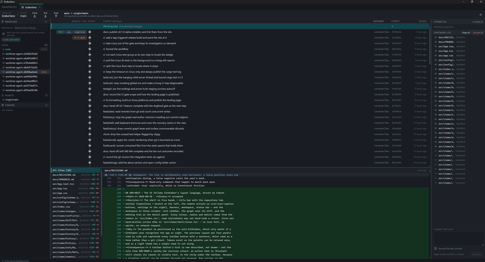

A fast, private desktop Git client. No account. No telemetry. No subscription.
Pre-alpha · not yet dogfooded · AGPL-3.0

GitKraken is a good client attached to an account, a subscription and a telemetry
pipeline. None of those make the client better at Git. Krakenless is the same job
with none of that: it opens, it reads your repository, and it shells out to the
git you already have.
Open the app, open a folder, work. There is nothing to sign into.
The app makes no network calls of its own. Git talks to your remotes; nothing else leaves the machine.
Your credential helper, hooks and LFS setup keep working, because it is git underneath — not a reimplementation.
A Tauri shell using the system webview, not a bundled browser. Settings are one readable JSON file you can copy.
It does not resolve conflicts for you, and it has no interactive rebase. It will not pretend otherwise in the UI — a client that quietly stages a file full of conflict markers is worse than one that says it cannot help.
Every command that could lose work is built from an argument array, checked against a deny-list derived from the arguments themselves, and refused unless something actually asked you. Discards go through a stash, and the recovery command is covered by tests that run it — because the first version of that command was well-formed and wrong.
Version 0.1.0-alpha. Pre-alpha means exactly that: it has not been through a full day of real work yet, so treat it as something to try on a repository you have pushed, not as your only Git client.
Installer (.exe)
·
MSI
64-bit. Needs git on your PATH.
Disk image (.dmg)
Apple Silicon only — there is no Intel build yet.
These installers are unsigned, because code-signing certificates cost money this project does not take. Windows SmartScreen will call the publisher unknown — “More info” then “Run anyway”. macOS will refuse the first launch; allow it in System Settings → Privacy & Security. If you would rather not click through either warning, build from source below: it is the same code and takes about two minutes.
Building avoids the unsigned-binary warnings entirely and takes Node 22, Rust and git:
git clone https://github.com/leoddias/krakenless.git
cd krakenless
npm install
npm run tauri dev